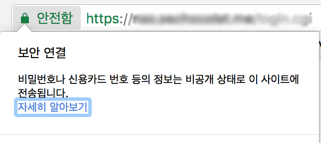

NAS 외부 접속 https 지원하기
저렴한 NAS를 찾다가 작년부터 IPTIME의 NAS-IIe를 사용해 왔다. 기존에 ipdisk 도메인을 이용하여 외부 접속을 사용하고 있었는데 크롬에서 HTTPS를 지원하지 않으면 경고 메시지를 띄우는 게 마음에 걸렸다. ipdisk 도메인은 내 소유가 아니라서 https를 지원하려면 내가 소유한 서브도메인으로 SSL 프록시를 하는게 좋을 것 같아 시도해 보았다.
목차
SSL 클라이언트 인증서 발급
보안서버를 구축하려면 https를 지원해야 하고 https를 지원하려면 SSL 인증서라는 것을 발급받아야 한다. 보통 SSL 인증서는 유료이고 가격이 꽤 비싸다. 그러나 https의 확산을 위해 SSL 인증서를 무료로 보급하는 프로젝트가 있었는데, 그게 바로 Let’s Encrypt다.
리눅스에서는 Let’s Encrypt에서 제공하는 소프트웨어 클라이언트인 letsencrypt를 사용하면 쉽고 편하게 적용할 수 있다. 그러나 무료인 대신 갱신주기가 유료서비스에 비해 짧고, 만료되기 전에 인증서를 갱신해야 한다.
Let’s Encrypt 인증서를 발급 받는 자세한 방법은 Outsider님의 글을 참고하길 바란다.
Lets’ Encrypt로 무료로 HTTPS 지원하기, Outsider’s Dev Story
SSL 리버스 프록시 설정
알아 보니 NGINX로 SSL 리버스 프록시를 지원하는 게 가장 빠르고 쉬운 방법 같았다.
리버스 프록시란
클라이언트는 프록시로 요청하고,
프록시가 배후(reverse)의 서버로부터 데이터를 가져오는 방식을 말한다.

앞 단 서버를 프록시로 두고 내부에서 데이터를 주고 받고, 리퀘스트를 받아서 넘겨 주는 구조다. NGINX애서는 리버스 프록시를 어떻게 설정해야 할까? 먼저 앞서 발급받은 SSL 클라이언트 인증서 및 NGINX 인증할 키를 추가한다.
server { |
선택사항으로 SSL 프로토콜과 암호를 지정할 수 있다.
server { |
그리고 프록시 설정을 추가한다.
server { |
프록시 주소는 반드시 내부 주소로 설정해야 한다.
Upstream 설정
앞서 설정한 부분까지만 진행한다면 사실 502 Bad Gate Way 오류가 날 것이다. 프록시만 패스하고 내부에서 통신하는 upstream 서버에 대한 허용은 하지 않았기 때문이다.
upstream이란
proxy_pass 지시자를 통해 NGINX가 받은 리퀘스트를 넘겨 줄 서버들을 정의하는 지시자다.
각 upstream 서버는 https 연결을 허용하도록 구성되어야 한다. upstream은 다음과 같이 설정할 수 있다. 추가로 keepalive를 켜서 NGINX와 upstream 서버 간에 불필요한 통신을 최소화한다.
upstream nas_server { |
그리고 앞서 설정했던 프록시 패스 서버를 upstream 서버로 바꾼다.
server { |
완성된 NGINX 설정 예시
최종 완성된 NGINX 설정은 다음과 같다.
upstream nas_server { |
기타 설정은 NGINX의 SSL 설정을 만들어주는 Mozilla SSL Configuration Generator를 사용했다.
서버를 실행하면 외부 접속했을 때 기분 좋은 녹색 자물쇠 표시를 볼 수 있다.

NAS https 설정을 하느라 꽤 오랫동안 삽질을 했다.
나 같은 사람이 있다면 조금이나마 도움이 되었으면 하는 마음에 부족한 글을 올려 본다.